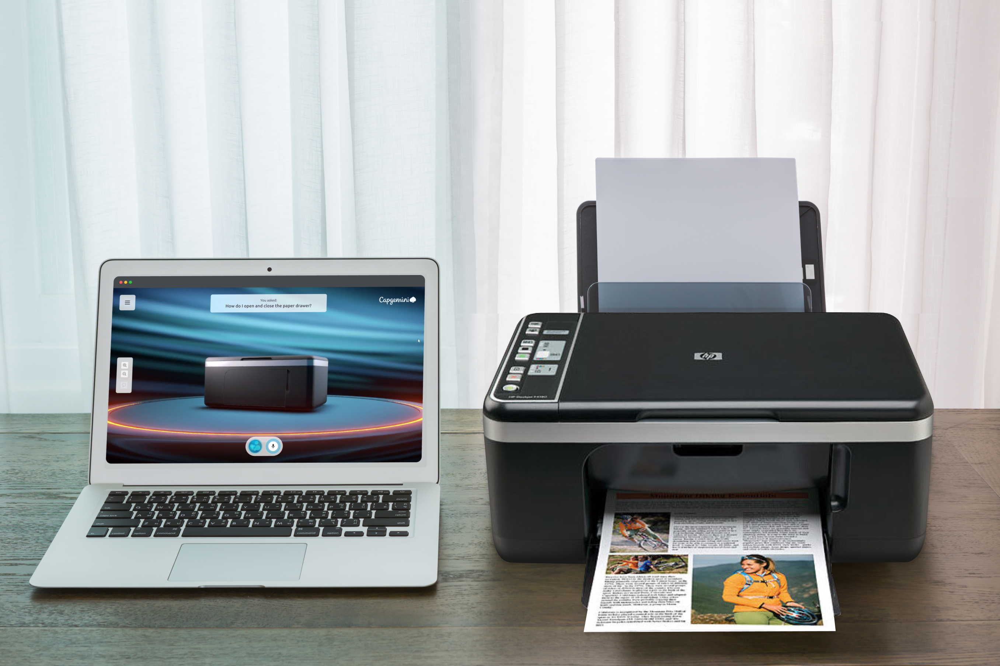
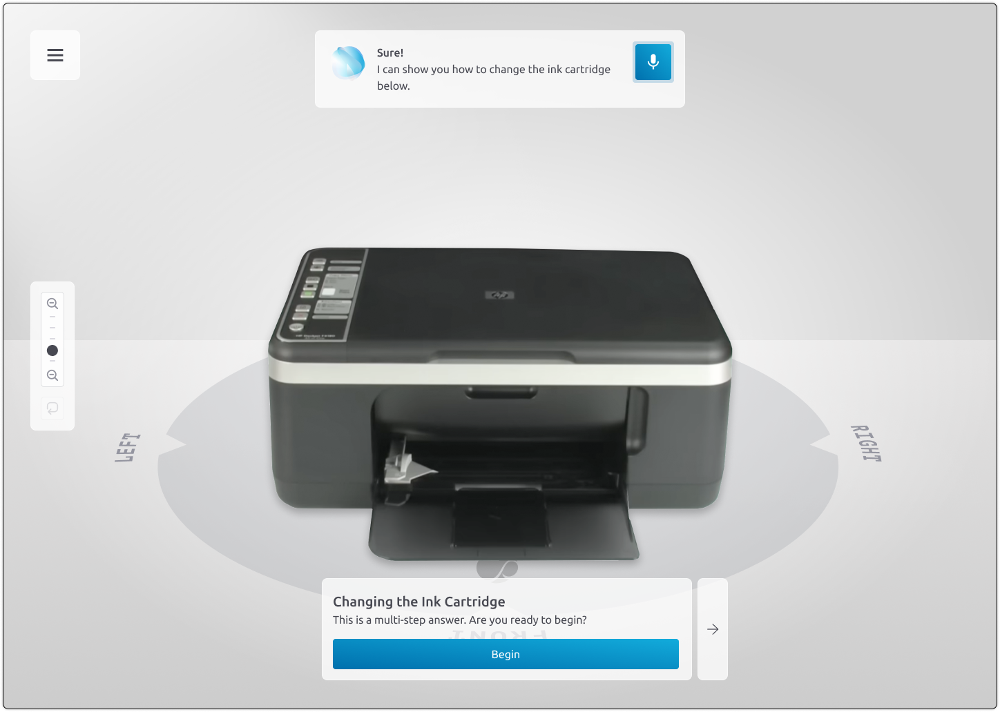
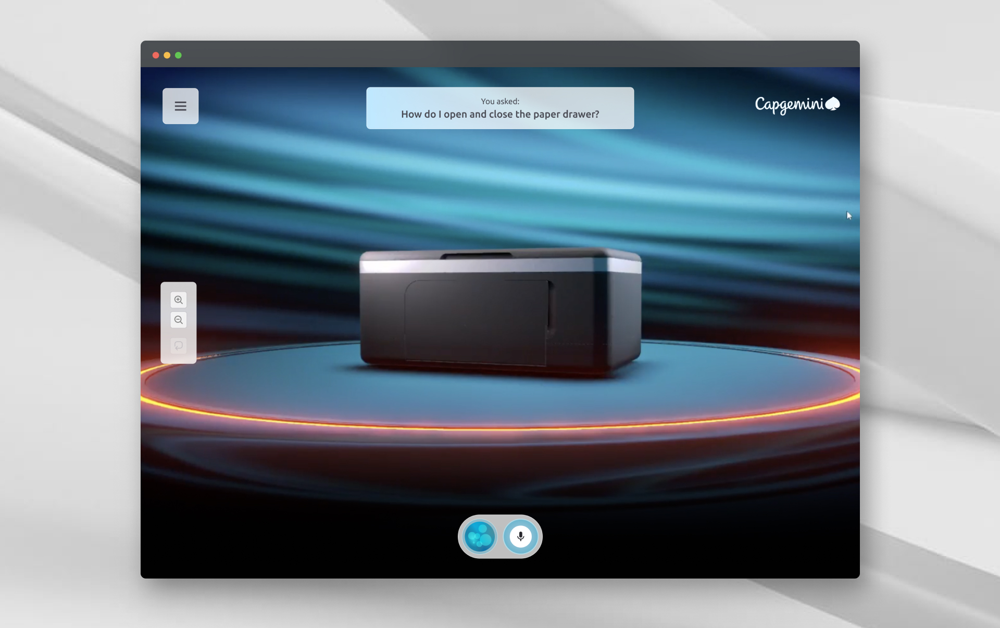
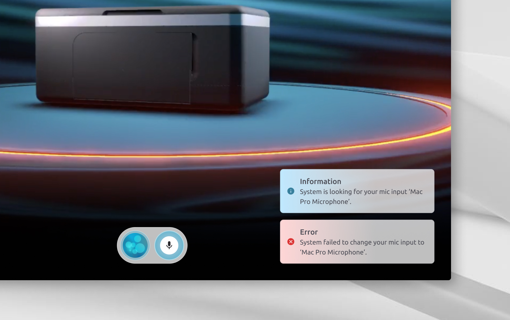
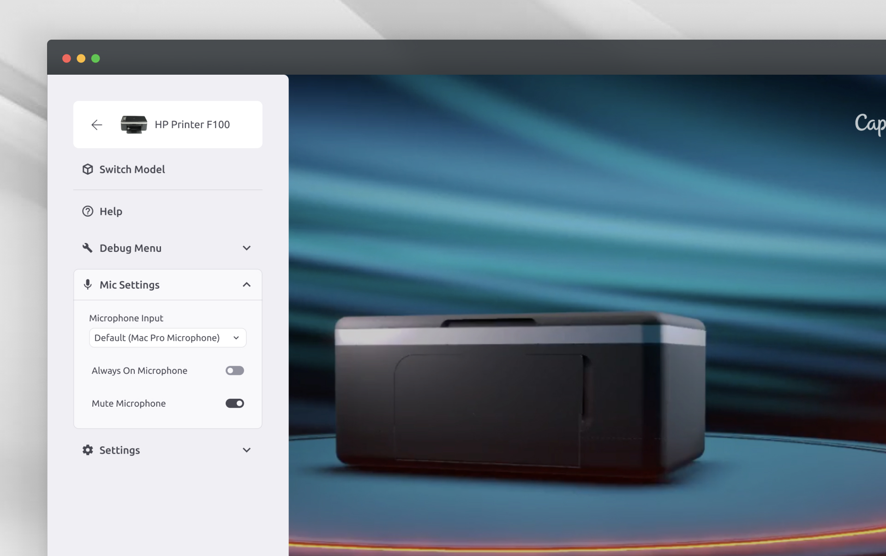
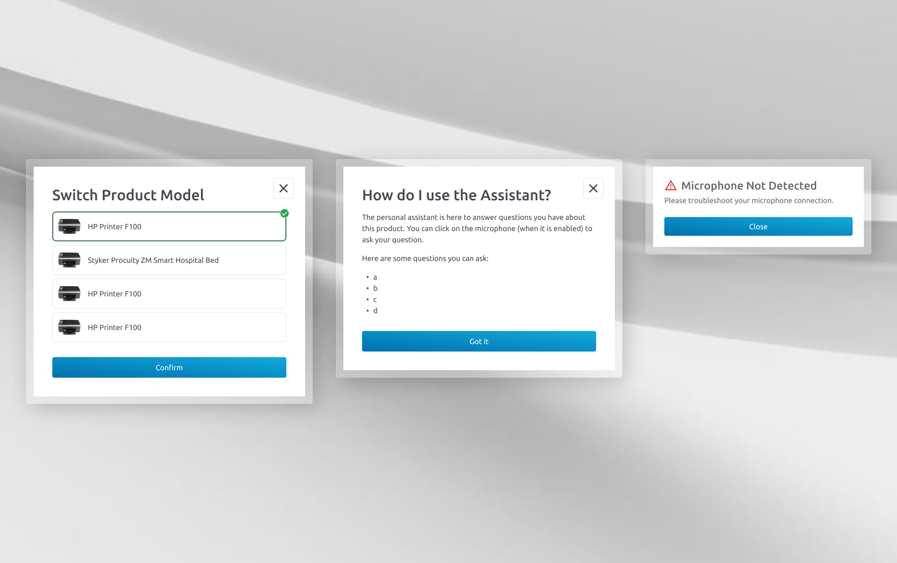

tiffany ren
ux & product design
AI Conversational Digital Twin

Role
I was the sole product designer with oversight from my creative director and product owner.
Tools
Figma, FigJam, Microsoft Planner
Overview & impact
Our objective was to create a conversational digital twin demo to show multiple semiconductor and info-tech clients who were interested in using AI for both end-consumer learning and employee training.
The idea was for users to access the application on-the-go to ask questions about a physical product, and receive answers in real-time, demonstrated by the 3D digital twin model. The user would be able to look around and learn about product features, get step-by-step troubleshooting guidance, and also cross-reference their physical manual's instructions against the 3D digital twin display.
Tight deadlines, ambiguous requirements
With the idea already looming in our client partners' minds, we needed a quick turnaround for a working demo under 2 months. As the technical art and development aspect would be very challenging scope-wise, design needed to quickly begin defining software, design, and hardware requirements and drive the team forward as much as possible.
As the technical artists and developers focused their time on research initially, it was difficult to focus the team on defining requirements, as they were still unsure what could be plausibly built. Instead of immediately defining strict requirements, I focused on providing user stories and business requirements to push the team in the right direction.
Printing out the steps
Once we knew that we would be going with a printer product, I focused on copywriting for the LLM and transcribing the product's user manual into animated steps. To ensure accuracy, I synthesized information from user manuals and troubleshooting videos while accompanying each step with required actions, animations, camera movements, and on-screen text.

Parsing of steps required to replace an ink cartridge, with screen examples, camera movements, animations, and required 3D parts.
Conversation flows
With the steps laid out, the next step was to figure out how the AI assistant would interact with the user.
The experience had 2 baseline requirements:
- The user asks AI a question about the product.
- The AI responds to the question and shows the answer visually.
When crafting the UX flow, we had several main considerations:
- It should feel like a natural conversation, with back and forth speech.
- Controls should be intuitive to the user, whether it be through voice, clicking, or touch.
- The AI should seamlessly direct conversations in the right direction.
- The AI should be able to handle single step and multiple step answers.
How do users perceive digital UI as part of a natural conversation?
At the bare minimum, the user needed to control the input of their voice, and to show that the AI was listening or responding. But how should we go about showing additional information?
Applications like Amazon Alexa only focus on sound and voice feedback, while other applications work like messaging services. As our product focused on visual feedback on the 3D model, we had to explore many levels of UI for the conversational back-and-forth between the user and the LLM.

Two of many lo-fi UI concepts exploring levels of information.
In the first MVP of the design, we went with a design that could be easily tested by our internal team. The UI displayed all of the LLM and user's input states in text, and showed how the LLM was thinking.
.png)
The user is speaking to the LLM via microphone.

The LLM responds with a step-by-step process.
UI Revisions
The first MVP's design received a strong, positive response, but something felt unnatural. The invasive UI with the text at each step was getting in the way of our core demo feature, the 3D digital twin.
Thus, we introduced new, less invasive (and more aesthetically pleasing) UI that showed states through icons and animations, with only critical messages being shown in toasts.

The user taps the mic button to ask a question, which is then logged at the top.

System alerts are given via toasts rather than a static UI window.

A menu is nested away in the left with model options and settings.

Modals for switching models, providing onboarding instructions, and action-required alerts.